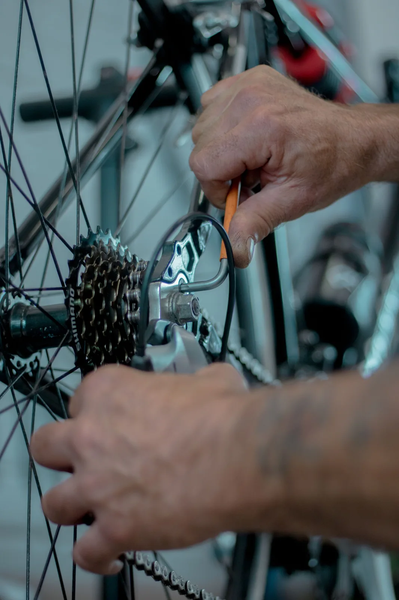
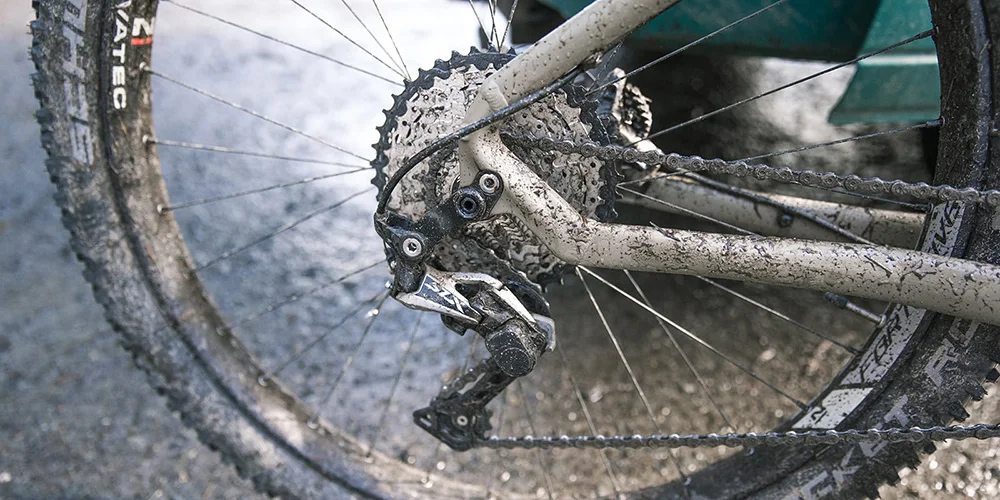
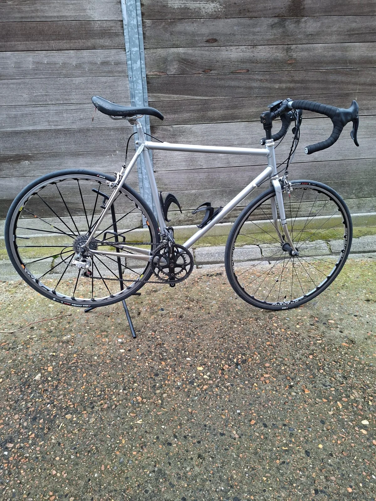
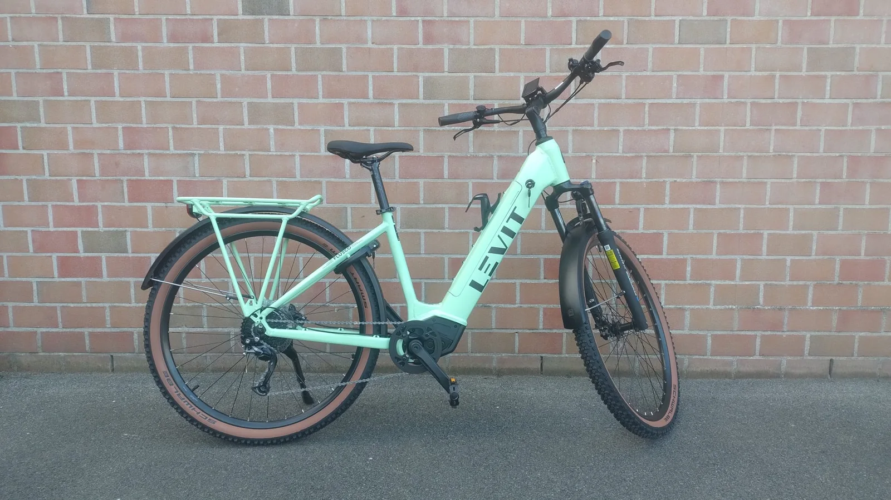
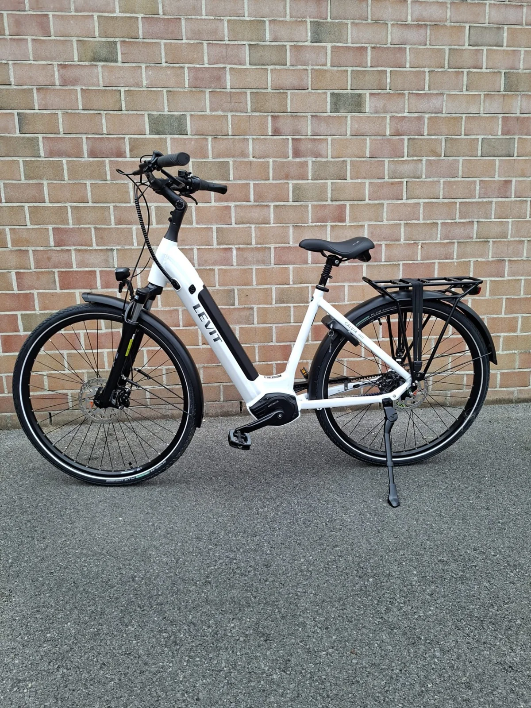
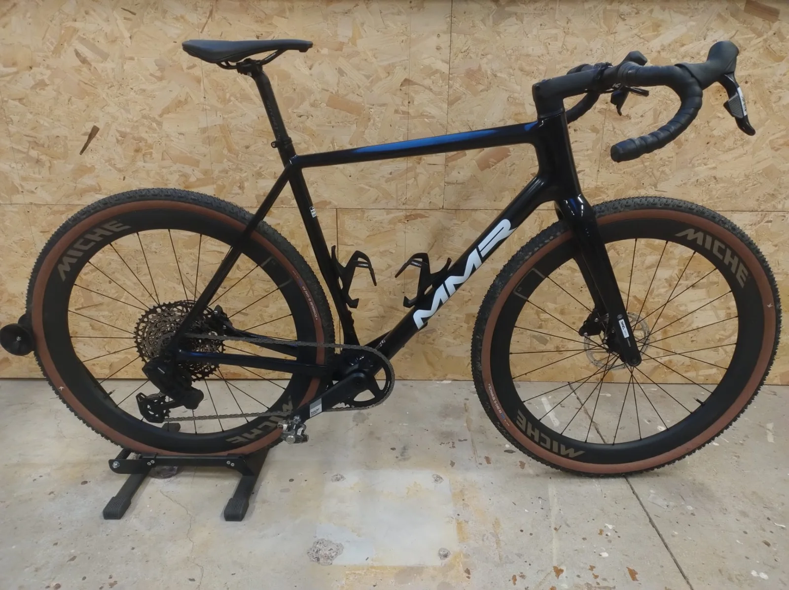
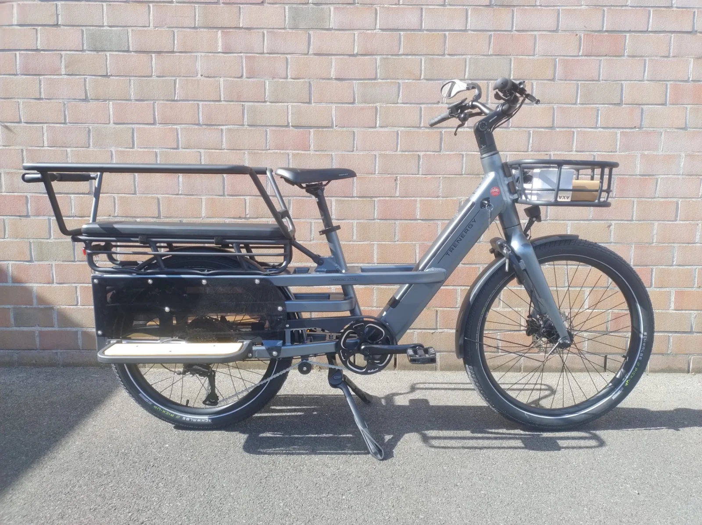
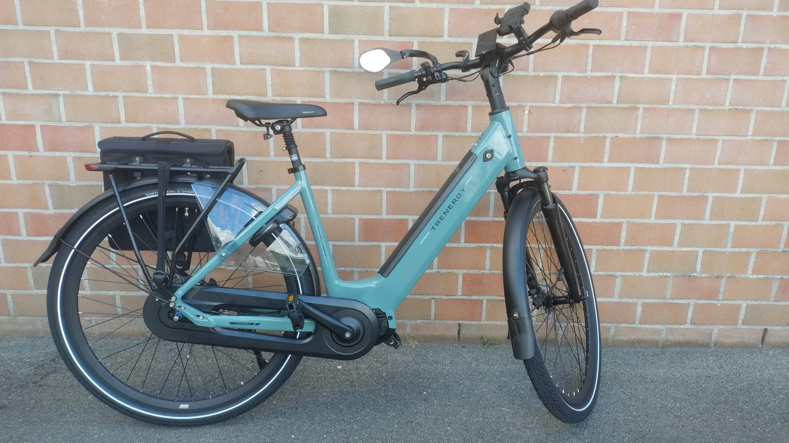
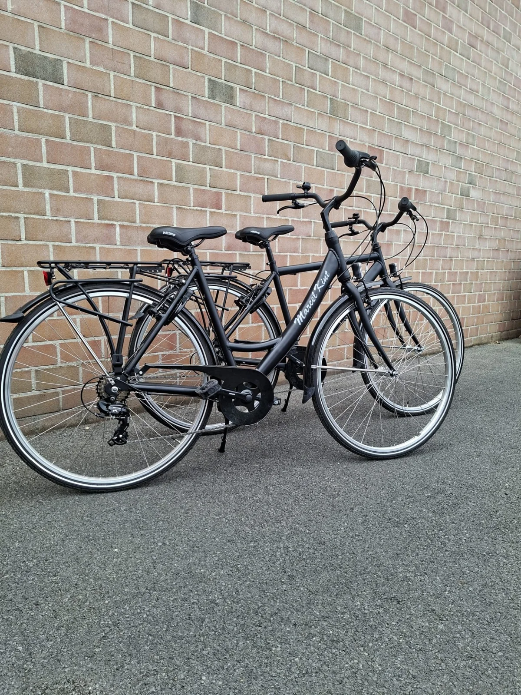
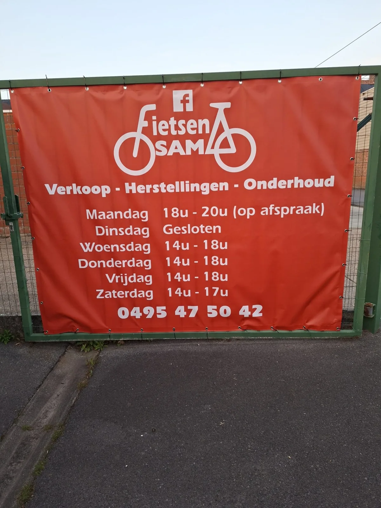

Ook jouw merk, ook je e-bike
Ketting vervangen, remmen aanspannen, een lekke band of een volledig onderhoud: Sam herstelt alle fietsen, van om het even welk merk of afkomst.
- 01Eerst bellen, dan pas vervangenKomt er een groot gebrek aan het licht, dan krijg je eerst een richtprijs en beslis jij.
- 02Meestal binnen de week klaarSam streeft ernaar om elke herstelling binnen de week af te werken.
- 03Gsm-nummer bij het binnenbrengenZo kan hij je bereiken zodra je fiets klaarstaat of als er iets te beslissen valt.


Geen zin om zelf te poetsen?
Je fiets, racefiets of mountainbike terug mooi en rijklaar, zonder dat jij er een emmer voor moet bovenhalen. Kies hoe ver Sam mag gaan.
Wassen
- Wassen
- Ontvetten
- Smeren
Wassen en waxen
- Wassen, ontvetten, smeren
- Waxen
De volledige beurt
- Wassen, ontvetten, smeren
- Waxen
- Klein onderhoud
Vraag de prijs gerust via het formulier onderaan of als je langskomt.
Nieuw, tweedehands of geleased
Een greep uit de fietsen die de voorbije maanden bij Sam tegen de muur stonden. Kom gerust kijken wat er nu staat.

Racefiets
Elektrisch
Stadsfiets
Gravel
Met bagagedrager
Elektrisch
StadsfietsenFietsenmaker uit liefde voor de fiets
Sam is een fietsliefhebber die zijn passie graag deelt. Naast zijn job draait hij Fietsen Sam in Gits, met verkoop, herstellingen en onderhoud. Op maandagavond kan je op afspraak langskomen.
- Maandag
- 18 tot 20 uur, op afspraak
- Dinsdag
- Gesloten
- Woensdag tot vrijdag
- 14 tot 18 uur
- Zaterdag
- 14 tot 17 uur

De klant eerst
"Zeer correct, en een hele goeie service ! Een fietsenmaker waar de klant wel op de eerste plaats komt"
"Heel tevreden van mijn aangekochte fiets bij jou. Scherpe prijs, klantvriendelijk, directe service bij mijn lekke band."
Breng je fiets binnen
Laat weten welke fiets het is en wat er scheelt. Je bericht staat meteen klaar in WhatsApp, je moet enkel nog op verzenden duwen.